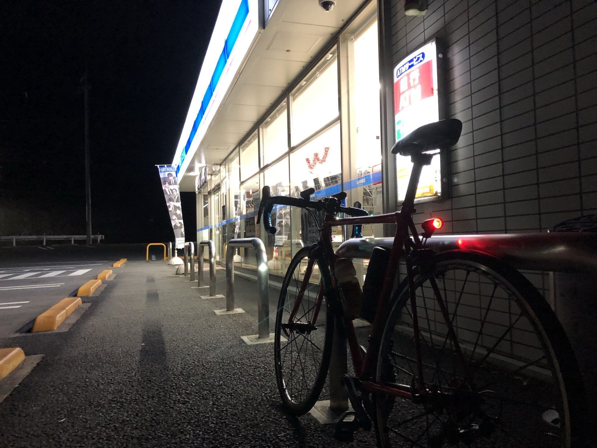

ロードバイク時々マウンテンを発掘する
昔のブログをただ懐かしむのではなく、今の富士ヒル挑戦に使える実験データとして読み直します。 昔の自分、今の自分、AIの三者レビューにすると、普通の再掲よりずっと面白くできます。
RECOVERED
発掘状況
Wayback Machineで確認できた旧ブログの保存状況です。記事本文は必要なものから順番に確認していきます。



REMAKE QUEUE
リメイク候補
今のブログと相性が良いものから優先します。全文復旧より、読み物として再編集する方針です。
新着
旧ブログを掘り返したら、219本の記事と2178枚の画像が出てきた
今回の復旧作業そのものを、長めの読み物として記事化しました。
最優先
富士ヒル追い込みの文章を見て思うこと
今の「楽しく強くなる」「追い込みすぎない」方針と直結するので、最初のリメイク記事に向いています。
機材比較
久々のターマック。SL6は軽い、よく登る
2019年の富士ヒル実績と、現在のAethos使用予定をつなぐ記事にできます。
練習
1分走は時間効率いいけど、やりたくはない
今のVO2刺激メニューとつなげると、過去の自分の練習観を検証できます。
読み物向き
ヤフオク、補給、パンク、CO2などの失敗シリーズ
実験体Aの失敗データベースとして、読み物にもノウハウにもできます。
FORMAT
リメイク記事の型
毎回この型にすると、古い記事を楽に新ブログへ変換できます。
本文
- 昔の記事の要点何を考えて、何をやっていたのかを短くまとめる。
- 今の私のツッコミ当時の判断を、今の経験と富士ヒル目標から見直す。
- 今に活かすこと練習、食事、機材、メンタルのどれに接続するか決める。
AI活用メモ
- AIに聞いたこと昔の判断は妥当か、今ならどう改善するか。
- 採用したこと現実的にやるものだけを採用。
- 却下したこと机上の正論や、楽しくない提案は普通に却下。